Welcome to the Virtual Herbal Garden
The AYUSH sector relies heavily on medicinal plants and herbs, which form the backbone of traditional healing practices. Our Virtual Herbal Garden allows you to explore these plants from the comfort of your home.
Interactive 3D Models
Tulsi (Ocimum sanctum)
Common Names: Holy Basil, Sacred Basil
Habitat: Native to India, commonly found in gardens.
Medicinal Uses: Known for its anti-inflammatory, anti-viral, and antioxidant properties.
Cultivation: Prefers warm climates and well-drained soil. Grows well in pots or garden beds.
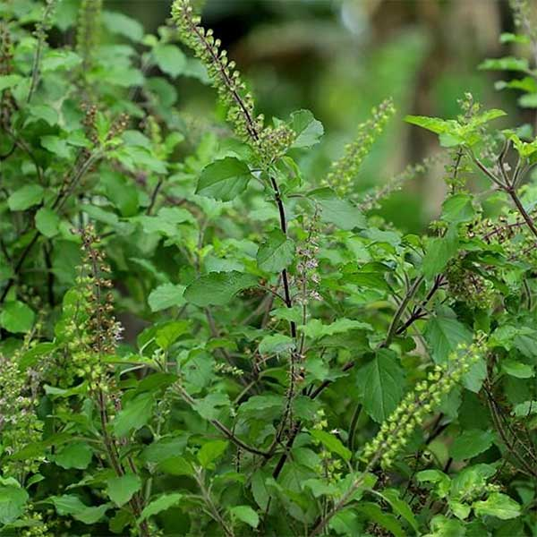
Learn More
Ashwagandha (Withania somnifera)
Common Names: Indian Ginseng, Winter Cherry
Habitat: Native to India, grows well in arid regions.
Medicinal Uses: Adaptogen, helps reduce stress and anxiety, boosts immunity.
Cultivation: Prefers dry, well-drained soil and full sunlight.
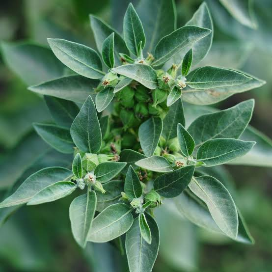
Learn MoreTurmeric (Curcuma longa)
Common Names: Haldi, Indian Saffron
Habitat: Native to Southeast Asia, requires a warm, humid climate.
Medicinal Uses: Anti-inflammatory, antioxidant, used in digestive health.
Cultivation: Grows in rich, well-drained soil with ample rainfall.
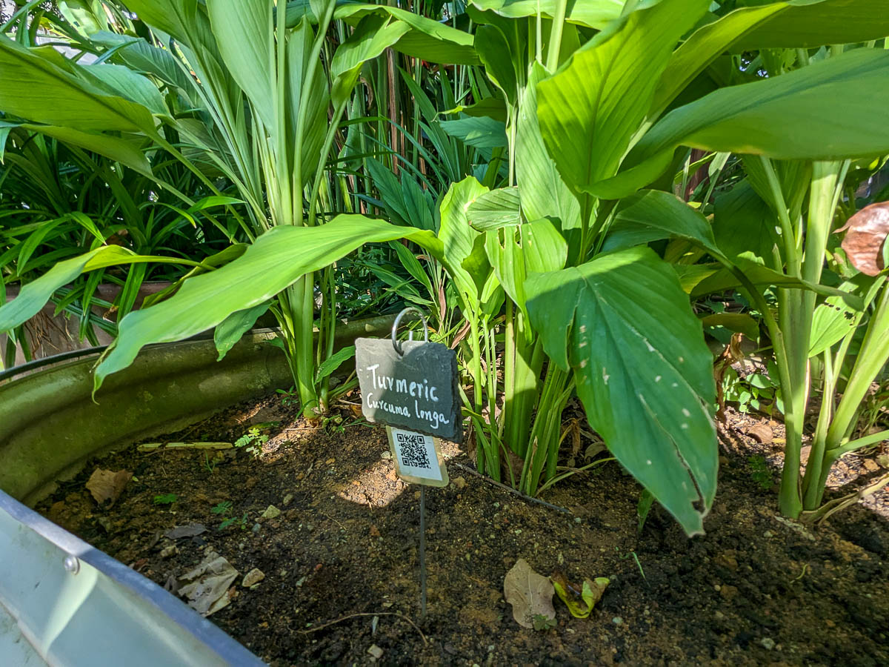
Learn MoreCinnamon (Cinnamomum verum)
Common Names: Ceylon Cinnamon, True Cinnamon
Habitat: Native to Sri Lanka, thrives in tropical climates.
Medicinal Uses: Helps regulate blood sugar levels, has anti-inflammatory properties.
Cultivation: Prefers warm, humid environments with well-drained soil.
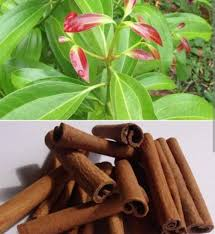
Learn MoreCardamom (Elettaria cardamomum)
Common Names: True Cardamom
Habitat: Native to India, grows in tropical and subtropical climates.
Medicinal Uses: Supports digestive health, has antimicrobial properties.
Cultivation: Requires a moist, tropical climate and well-drained soil.
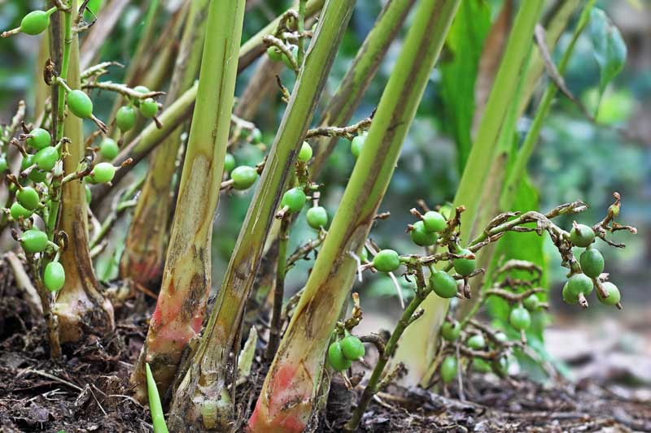
Learn MoreAloe Vera (Aloe barbadensis miller)
Common Names: Aloe, Ghritkumari
Habitat: Prefers arid, semi-tropical climates.
Medicinal Uses: Used for skin healing, digestion, and anti-inflammatory properties.
Cultivation: Thrives in sandy soil and minimal watering.
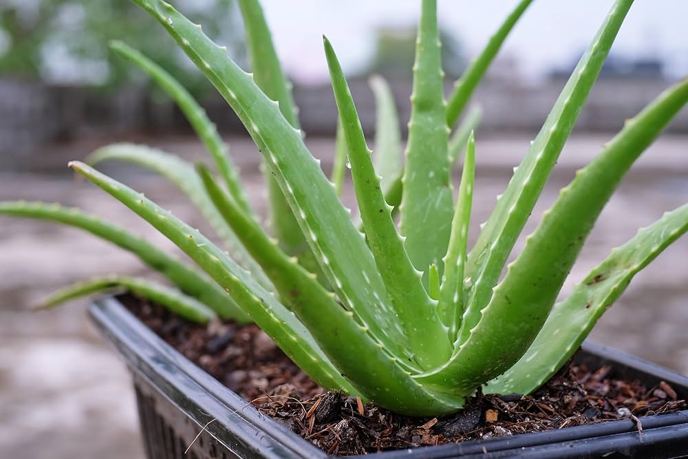
Learn MoreGinger (Zingiber officinale)
Common Names: Adrak
Habitat: Thrives in warm and humid climates.
Medicinal Uses: Aids digestion, reduces nausea, anti-inflammatory.
Cultivation: Needs fertile, moist, well-drained soil.
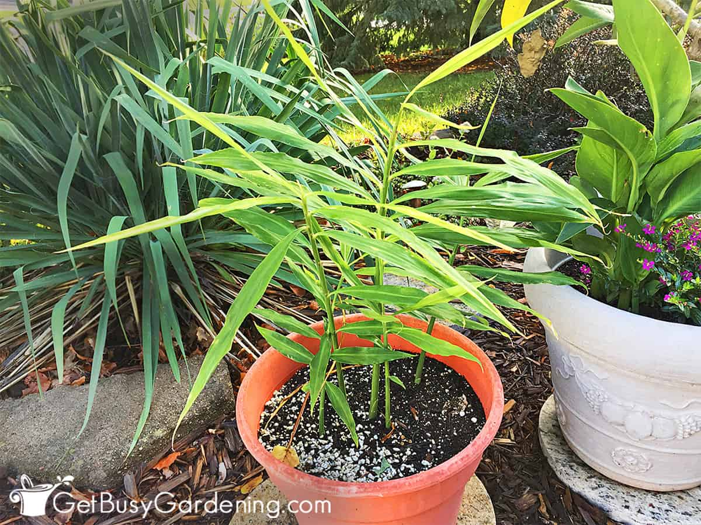
Learn MoreHibiscus (Hibiscus rosa-sinensis)
Common Names: Gudhal
Habitat: Grows in tropical and subtropical areas.
Medicinal Uses: Supports hair health, lowers blood pressure.
Cultivation: Prefers sunlight and regular watering.
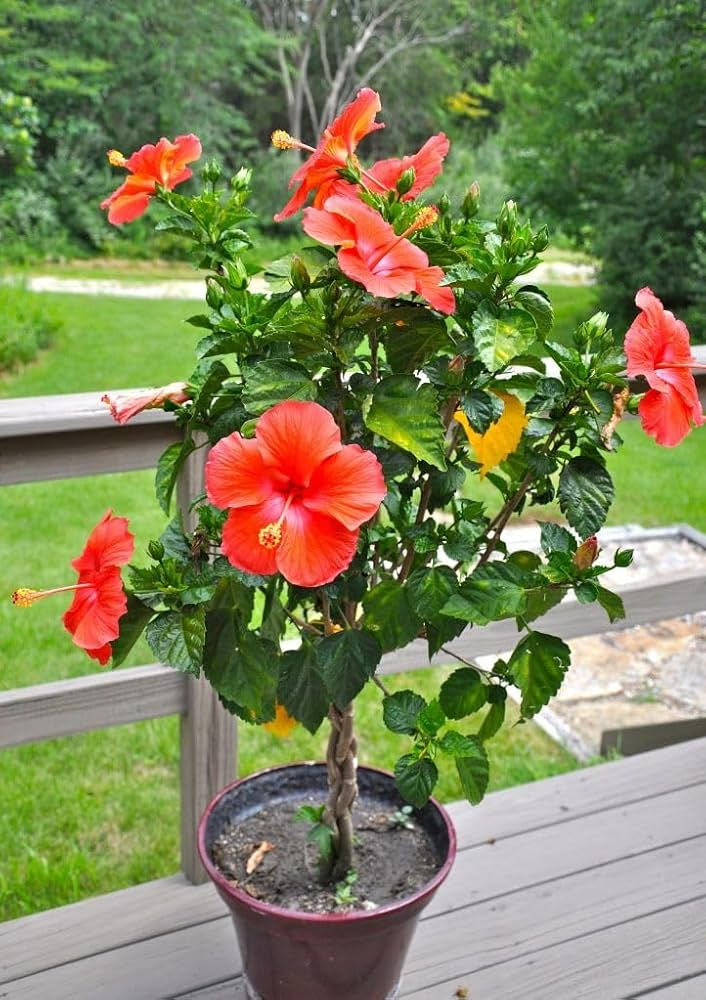
Learn MoreRosemary (Rosmarinus officinalis)
Common Names: Rosemary
Habitat: Native to the Mediterranean.
Medicinal Uses: Enhances memory, hair growth, digestion.
Cultivation: Requires well-drained soil and full sunlight.
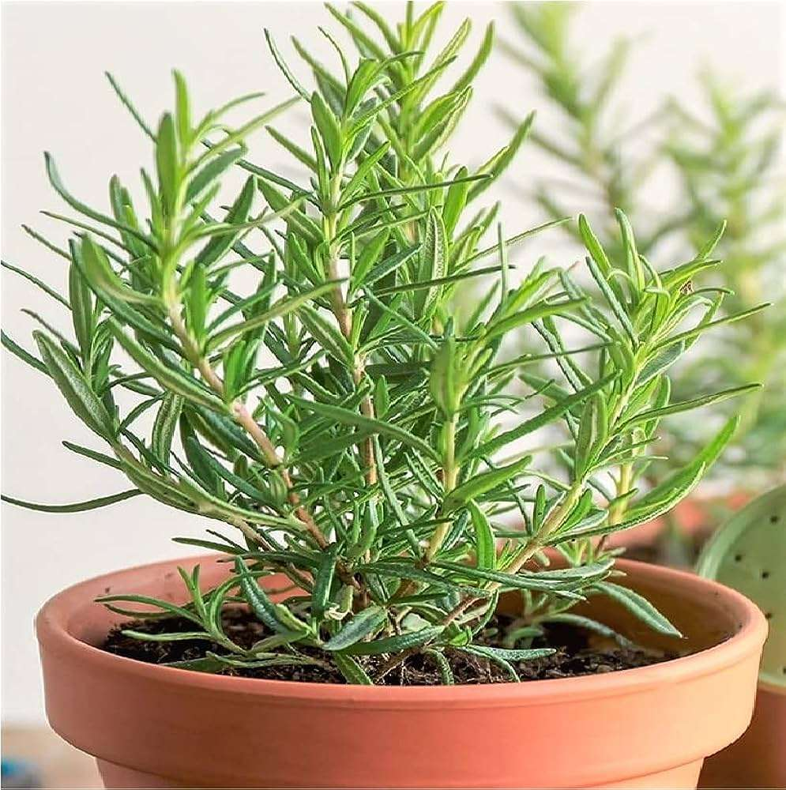
Learn MoreAmla (Phyllanthus emblica)
Common Names: Indian Gooseberry
Habitat: Native to India, found in tropical areas.
Medicinal Uses: Rich in Vitamin C, boosts immunity and metabolism.
Cultivation: Grows in a variety of soils, drought-resistant.
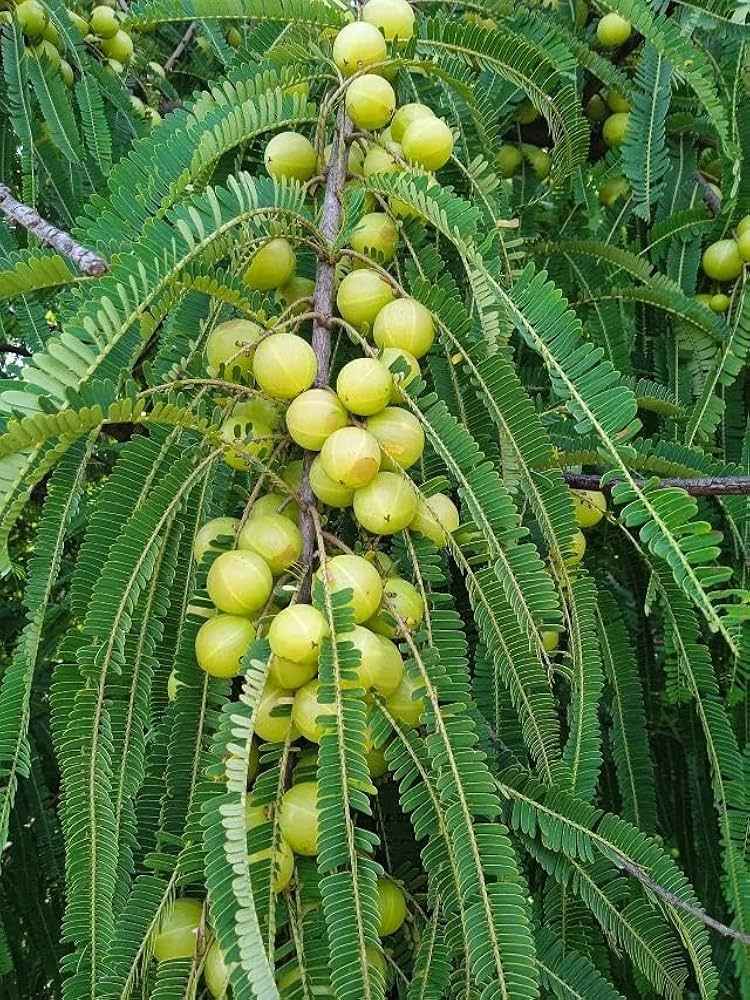
Learn MoreBamboo (Bambusa vulgaris)
Common Names: Bamboo
Habitat: Thrives in tropical and subtropical zones.
Medicinal Uses: Used in Ayurveda for respiratory and digestive disorders.
Cultivation: Prefers moist, well-drained soil with good sunlight.
Learn MoreBhringraj (Eclipta alba)
Common Names: False Daisy
Habitat: Common in moist regions of India.
Medicinal Uses: Known for hair care, liver detoxification.
Cultivation: Requires moist soil and warm climate.
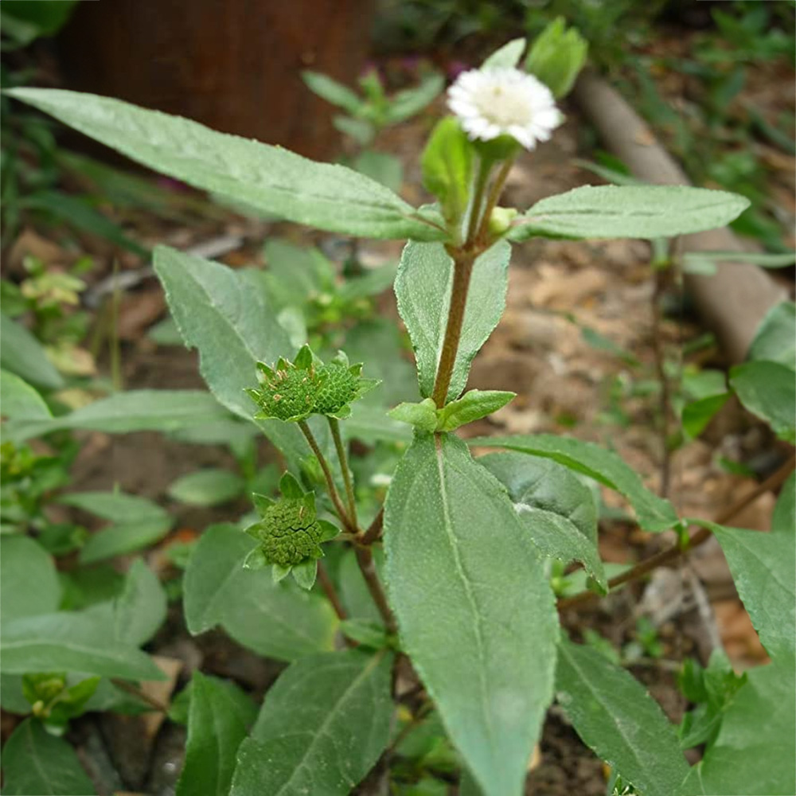
Learn MoreCurry Leaves (Murraya koenigii)
Common Names: Curry Patta
Habitat: Native to India, grows in tropical areas.
Medicinal Uses: Improves digestion, controls blood sugar, good for hair.
Cultivation: Needs well-drained soil and moderate sunlight.
 Learn More
Learn More
Clove (Syzygium aromaticum)
Common Names: Clove Buds
Habitat: Native to Indonesia, thrives in tropical climates.
Medicinal Uses: Used for pain relief, has antibacterial and antioxidant properties.
Cultivation: Prefers warm, humid conditions with rich, well-drained soil.
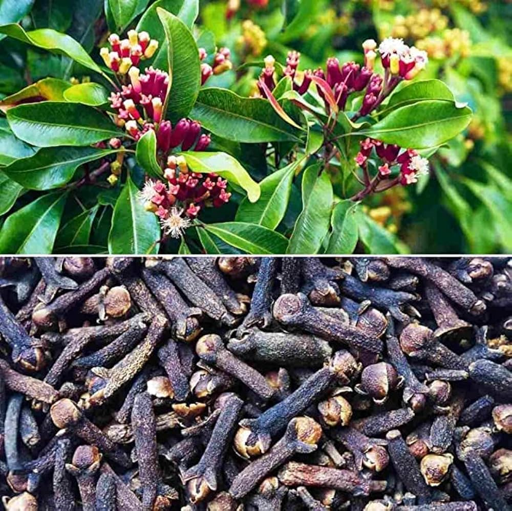
Learn More